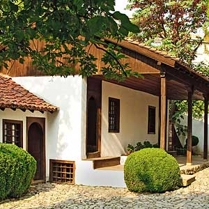
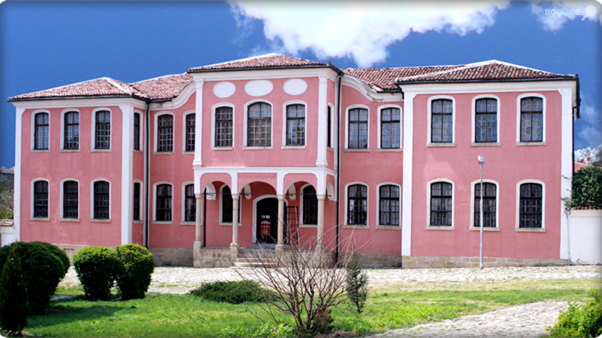

Забележителности
Национален музей „Васил Левски”
Родната къща на Апостола, построена в края на ХVІІІ век, е възстановена през 1933 г. и е отворена за посещение като музей през 1937 г. Комплексът включва още експозиционна зала, Чардаклиевата къща, Онбашиевата къща и параклиса „Всех святих болгарских”, където се съхранява част от косите на Апостола. Музеят е включен в „100-те национални туристически обекта”.
Исторически музей – Карлово, част от 100-те НТО
Намира се в Стария град, в една от най-представителните сгради от епохата на Възраждането – някогашното петокласно мъжко училище, построено през 1871 г. Музеят представя историята на града от основаването му през ХV век до наши дни. Ккомплексът включва и открити експозиции – възстановка на розоварна от началото на XIX век, терзийска работилница, гайтанджийска одая, тепавица и др.
Мазаковата къща
Мазаковата къща в старинния град е архитектурен и исторически паметник на културата. Построена е около 1848 г. В нея е разположена постоянна етнографска експозиция, която пресъздава типичен градски бит, характерен за богатите карловски фамилии.
Даскал-Ботевата къща

В родния дом на даскал Ботьо може да се разгледа фотодокументална изложба, представяща живота и делото на видния възрожденски просветител.
Църква „Свети Николай” (1847 г.)
.jpg)
Църква „Свети Николай” (1847 г.) – паметник на възрожденската архитектура. Сред иконописците й са Станислав Доспевски и Иван Зографски. Тук през 1858 г. за първи път е отпразнуван денят на българската писменост. В двора на църквата се намира гробът на Гина Кунчева – майката на Васил Левски.
Паметник на Васил Левски
Основният му камък е положен на 15 май 1903 г. в присъствието на княз Фердинанд. На пиедестала на паметника са изписани имената на загиналите през страшните юлски и августовски дни на 1877 г. карловци, възприели веруюто на Левски : „Нам свобода и човешки правдини трябват!”.